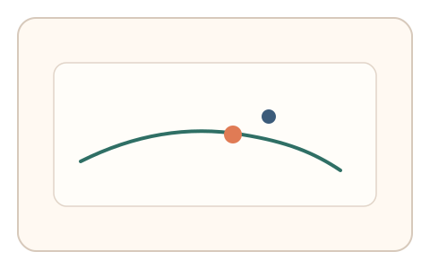
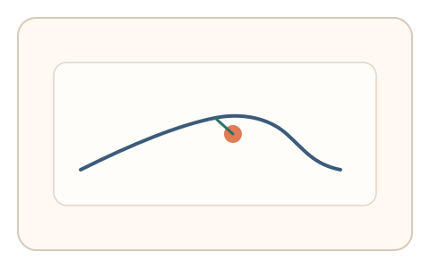
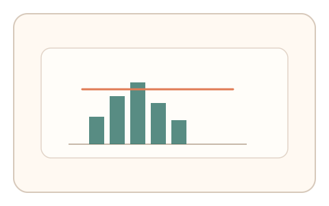

#17
生物肌肉与鼠标运动
已扩展
干扰避让反射
在目标路径中插入移动干扰点，利用反射性避让的时间‑幅度分布验证真实性。
概念原文
轨迹中随机出现移动干扰点，用户需即时避让并保持目标方向。人类反射性纠偏具有短时延与特定幅度分布。
以“反射反应的时间—幅度分布”作为核心验证信号。
研究背景
突发刺激会引发人类的反射性避让反应，具有可测的反应时与纠偏幅度分布。通过在轨迹中加入移动干扰点，可捕捉人类反射性纠偏的时序结构，抑制脚本的零延迟与过度平滑。
核心机制
- 在目标路径中随机插入移动干扰点。
- 要求用户保持主路径并即时避让。
- 记录反应时、避让幅度与回归速度。
- 多次插入构建稳定统计特征。
用户流程
- 步骤 1：用户开始沿主路径移动。
- 步骤 2：干扰点出现，用户即时避让并回归。
- 步骤 3：系统分析反射性参数并判定。
判定信号
干扰出现后的反应时
反射性反应存在典型时间窗。
避让幅度与回归速度
真实纠偏会呈现特定幅度与回弹曲线。
判定逻辑
以干扰事件为锚点统计反应时分布与避让幅度区间，要求符合人类反射模式；零延迟或过度平滑判异常。
对抗面
- 脚本预测干扰点并提前规划路径
- 回放真实避让轨迹
防御与缓解
- 随机干扰点位置、速度与出现时机
- 结合微抖动与速度曲线进行多信号判定
- 引入短时不可预测的微扰
可达性与风险
提供低干扰强度与更慢速度模式，避免对反应速度受限用户造成负担。
- 频繁干扰可能引起认知负担
- 高延迟设备影响反应时统计
可视化状态

状态 1：主路径追踪
用户沿主路径移动。

状态 2：干扰避让
干扰点出现后立即避让并回归。

状态 3：反射判定
基于反应时与幅度分布判定。
参考资料
Reflex
说明反射性反应的生理基础。
Reaction time
说明反应时分布作为行为特征。